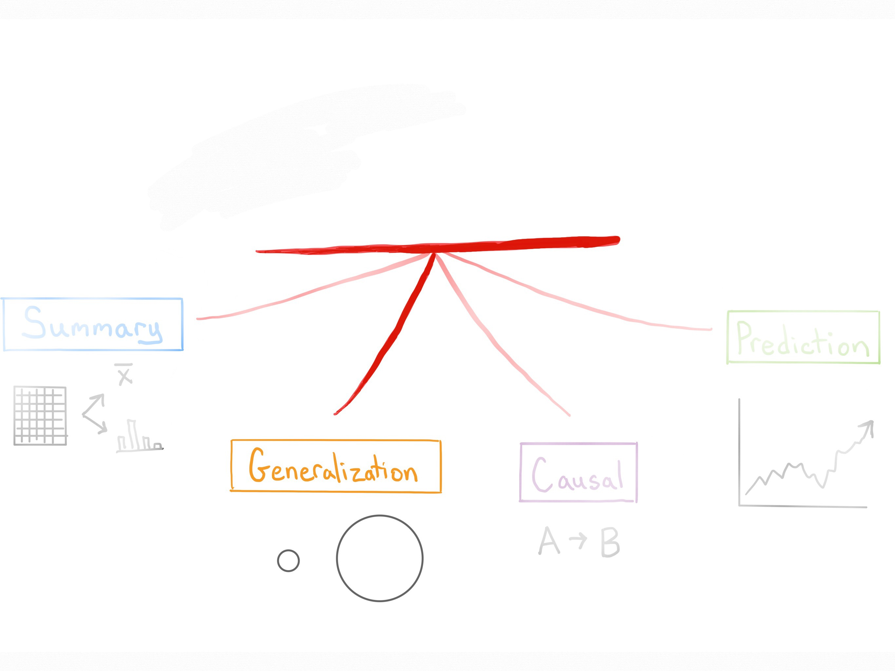
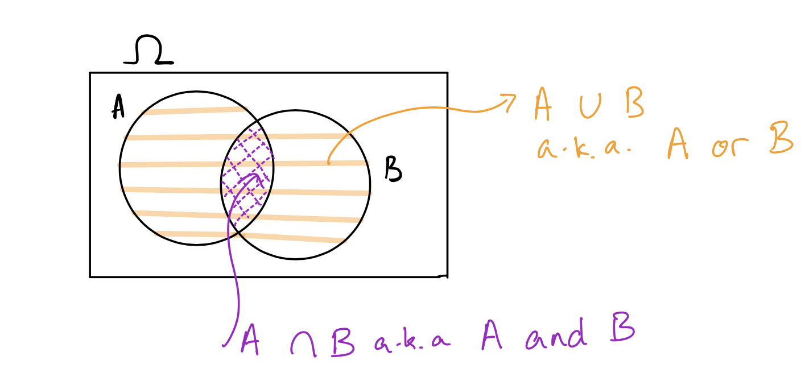
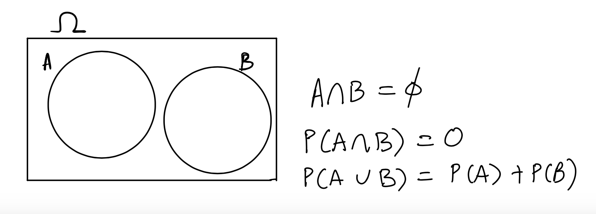

set.seed(123)
# Game 1: 1000 trials of 4 rolls
die <- 1:6
game1 <- replicate(1000, any(sample(die, 4, replace = TRUE) == 6))
cat("Game 1 probability:", mean(game1), "\n")
# Game 2: 1000 trials of 24 rolls of pair
game2 <- replicate(1000, any(sample(1:36, 24, replace = TRUE) == 36))
cat("Game 2 probability:", mean(game2))Introducing Probability
Definitions, axioms, and examples
Dr Andrew Mitchell ![]()
Lecturer in AI and Machine Learning for Sustainable Construction
2025-01-30
Part 1: Introducing Probability
Introducing Probability
Why Study Probability?
- Quantify uncertainty
- Make valid generalizations
- Understand sampling variation
- Evaluate statistical claims

Real-World Applications:
- Election polling
- Clinical trials
- Sports analytics
- Dating probabilities!
De Méré’s Paradox
Game 1:
- Roll a fair die 4 times
- Bet on at least one six
- De Méré’s calculation: \(4 \cdot (1/6) = 2/3\)
Game 2:
- Roll two dice 24 times
- Bet on at least one double six
- De Méré’s calculation: \(24 \cdot (1/36) = 2/3\)
- De Méré’s calculations were wrong
- Simple multiplication doesn’t work
- Need proper probability theory
- Simulation helps verify results
Basic Probability Concepts
- Experiment:
- Action involving chance
- Finite possible outcomes
- Example: coin toss, die roll
- Outcome Space ():
- Set of all possible outcomes
- Example for coin: = {Heads, Tails}
- Example for die: = {1, 2, 3, 4, 5, 6}
- Event:
- Collection of outcomes
- Subset of outcome space
- Example: “rolling an even number”
- Denoted by capital letters: A, B, C
- Probability P(A):
- Measure of likelihood
- Between 0 and 1
- For equally likely outcomes: P(A) = k/n
- k = outcomes in event, n = total outcomes
Equally Likely Outcomes
Definition:
When all outcomes have same probability: \(P(\text{each outcome}) = \frac{1}{n}\)
For event A with k outcomes: \(P(A) = \frac{k}{n}\)
Examples:
- Fair coin: P(H) = P(T) = 1/2
- Fair die: P(each face) = 1/6
Visualization:
Axioms of Probability
The Three Axioms:
- Non-negativity:
- P(A) ≥ 0 for any event A
- Total Probability:
- P(Ω) = 1 for sample space Ω
- Addition Rule:
- For mutually exclusive events:
- P(A ∪ B) = P(A) + P(B)
Important Consequences:
- Complement Rule:
- P(A) + P(A^C) = 1
- Impossible Event:
- P(∅) = 0
- Probability Range:
- 0 ≤ P(A) ≤ 1
Set Operations & Venn Diagrams

Key Operations:
- Union (A ∪ B): “or”
- Intersection (A ∩ B): “and”
- Complement (A^C): “not A”
Mutually Exclusive Events:

- No outcomes in common
- A ∩ B = ∅
- P(A ∩ B) = 0
- Example: rolling a 6 AND a 1
Examples: Fair Die
R Implementation: Key Functions
Simulating Probability: Examples
Die Rolling Example:
Key Points:
- Simulation Process:
- Define outcomes
- Set sample size
- Use appropriate sampling
- Calculate proportions
- Long-run Behavior:
- Empirical ≈ Theoretical
- Law of Large Numbers
- More trials = Better estimate
Summary
- Foundations:
- Experiments and outcomes
- Sample spaces and events
- Probability axioms
- Set operations
- Key Concepts:
- Equally likely outcomes
- Mutually exclusive events
- Addition rule
- Complement rule
- Implementation:
- sample() for random draws
- set.seed() for reproducibility
- seq() for creating sequences
- Simulation for verification
- Applications:
- Games of chance
- Real-world probabilities
- Statistical inference
- Decision making